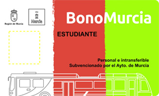
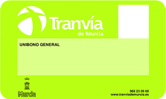

Transportation 交通運輸
在外留學，交通方式無非是大眾運輸、共乘車或步行。
1. 輕軌 (Tranvía)
輕軌是穆爾西亞最方便的交通工具。路線只有一條線（L1），涵蓋了大部分留學生會去的地方。
💰 票價資訊
| 單程票 (Zona 1 / Zona 2) | 1.4€ / 1.5€ |
| 三色卡 (Bono Multitranspote) | 0.5€ / 次 |
| 學生月票 (Bono Campus) | 12€ / 28天無限搭乘 |
* 月票與三色卡需持學生證前往輕軌公司申請。

圖：三色卡 (Bono Estudiante)

圖：輕軌卡 (Tranvía)
⚠️ 重要轉乘提醒：
往學校 (Universidad) 方向時，前往 UCAM 的人需在 Los Rectores-Terra Natura 站下車，轉乘往 UCAM - Los Jerónimos 的接駁支線。返程亦同（偶有直達車）。
往學校 (Universidad) 方向時，前往 UCAM 的人需在 Los Rectores-Terra Natura 站下車，轉乘往 UCAM - Los Jerónimos 的接駁支線。返程亦同（偶有直達車）。
2. 公車 (Autobús)
公車系統較為複雜，分為市區 (TMurciaBus) 與郊區 (TMP) 兩套系統。
- 三色卡價格： 每次搭乘為 0.8€。
- 識別方式： 車頭標誌有 R 的通常為市區公車。
- 前往 UCAM： 可搭乘 44、33 號公車。
🚨 陷阱注意：
1. 務必確認車頭有寫 UCAM - Los Jerónimos。例如 44E 是往移民局方向，完全不到學校。
2. 公車時常誤點或消失，Google Maps 資訊不完全準確。
1. 務必確認車頭有寫 UCAM - Los Jerónimos。例如 44E 是往移民局方向，完全不到學校。
2. 公車時常誤點或消失，Google Maps 資訊不完全準確。
3. 必備應用程式 (App)
注意：以下 App 介面主要皆為西班牙文。
Tranvía de Murcia
輕軌路網與時刻
輕軌路網與時刻

TMurciaBus
市區公車
市區公車

TMP
郊區公車
郊區公車